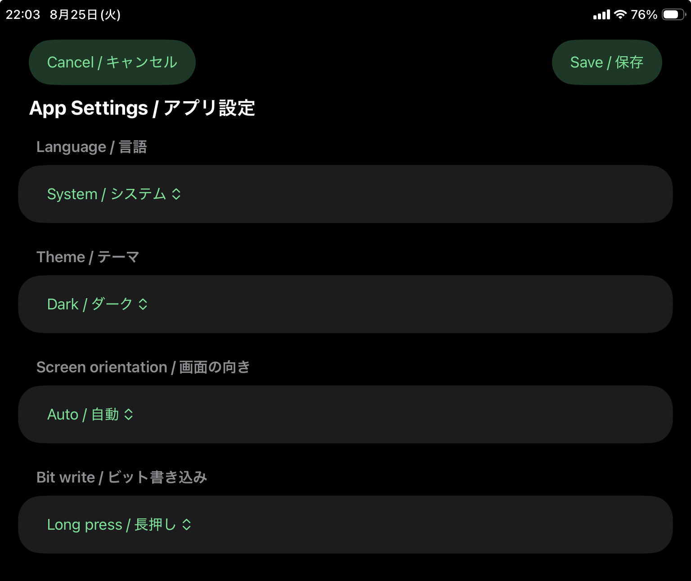

システム
端末の言語設定に従います。日本語環境では日本語、それ以外ではアプリの対応言語に従って表示されます。
App Settings
表示言語、ライト/ダーク、画面レイアウト、ビット書込モードを設定します。デバイス操作パネルの配置は画面レイアウトに連動します。

システム、日本語、英語端末に合わせる、ライト、ダーク自動、縦固定、横固定。デバイス操作パネルの表示位置は、選択したレイアウトに連動します。端末の言語設定に従います。日本語環境では日本語、それ以外ではアプリの対応言語に従って表示されます。
端末設定に関係なく、アプリの表示を日本語に固定します。
端末設定に関係なく、アプリの表示を英語に固定します。
OS のライト/ダーク設定に従います。
アプリをライトテーマで表示します。明るい背景で使いたい場合に選びます。
アプリをダークテーマで表示します。暗い現場や夜間に画面輝度を抑えたい場合に選びます。
自動 では端末サイズと向きに合わせて、縦向き表示と横向きの分割表示を切り替えます。デバイス操作パネルは、横画面では右パネル、縦画面では下部パネルとして表示されます。現場で常に同じ表示にしたい場合は 縦固定 または 横固定 を選びます。
ビットデバイスの ON/OFF 書込で使う確認方式を選びます。誤操作防止のため、現場の運用に合わせて設定してください。